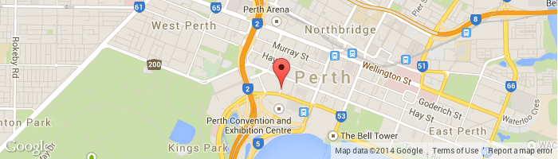

Estetska stomatologija
Izbeljivanje zuba je proces uklanjanja raznih mrlja i diskoloracija sa površine zuba, a samim tim i boja zuba postaje belja. Beljenje zuba je veoma popularna procedura, jer možete bez ikakvih neprijatnosti i po pristupačnoj ceni doći do prelepih belih zuba, a kod nas možete iskoristiti i akciju koja je trenutno u toku.
Imati magičan osmeh, lep i prepoznat, nije lako. Treba imati disciplinovan pristup, kada je u pitanju oralna higijena, ali i sve ono što prati lep osmeh, poput redovnosti kod stomatologa i intervencija unutar usana. Nekome, pak, priroda nije dala zdrave zube, lepog oblika i i boje. Međutim, to nije razlog za očajavanje. Izbeljivanje zuba je danas dostupan proces, koji može učiniti da zubi sa diskoloracijom, poprime jednake boje.

Kontakt: ordinacijamojosmeh@gmail.com